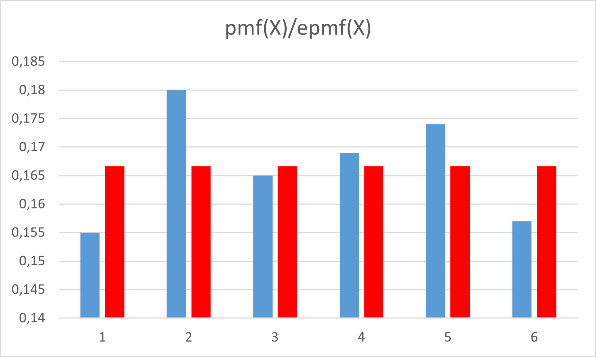
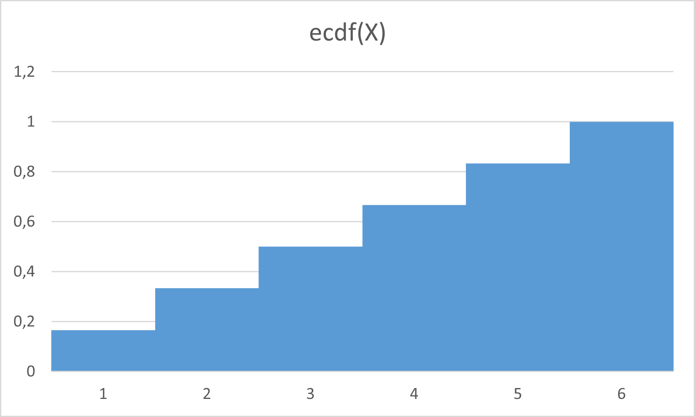

Laboratorium nr 1
matematykalaboratorium@gmail.com
Odpowiedzi
Uwaga: liczby zależą od zestawu danych!
Odpowiedź do zadania A.2
Rozkład masy prawdopodobieństwa pmf(X)
Odpowiedź do zadania A.3
Porównanie rozkładów

Odpowiedź do zadania A.4
Dystrybuanta empiryczna ecdf(X)

Odpowiedź do zadania A.5
Teoretycznie: EX=3,5 oraz D^2X=91/6 - (7/2)^2
Odpowiedź do zadania B.2
Rozkład masy prawdopodobieństwa pmf(X)
Odpowiedź do zadania B.3
Porównanie rozkładów

Odpowiedź do zadania B.4
Dystrybuanta empiryczna